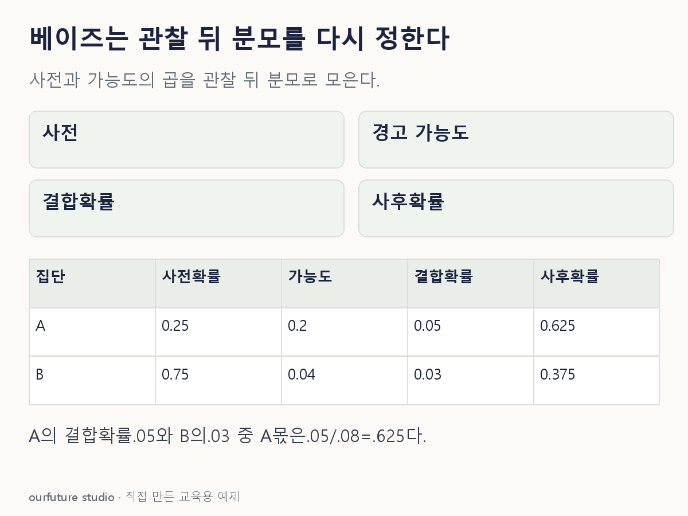

조건을 바꾸며 확인하기
A/B는 상호배타적이고 전체를 덮는다. 확률은0~1, 출력은백분율이다. 실제 빈도·원인 확정·고장 실험이 아니다.
설명 그림과 비교하기
아래 그림과 표는 고정된 설명 예제입니다. 기본·변형 중 어떤 조건인지 캡션을 읽고, 바꾼 입력의 결과는 계산 칸에서 확인하세요.

같은 문제를 직접 골라 보기
A형 25%·B형 75%. 경고 확률은 A에서 20%, B에서 4%다. 두 유형이 전체다.
조건을 더 바꾸면?
사전 비율만 A/B가 각각 50%로 바뀌면 경고 후 A의 확률은?
변형 풀이 확인
5/6, 약 83.3%.
A의 점수 0.5×0.20=0.10, B는 0.5×0.04=0.02다. 0.10/0.12를 구한다.
사전 곱하기 가능도, 관찰된 전체로 나누기.